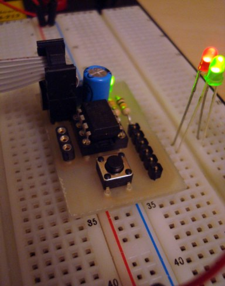
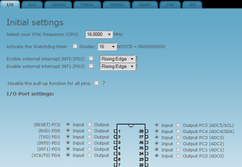

A weblog focused on interesting circuits, ideas, schematics and other information about microelectronics and microcontrollers.
E-books
Disclaimer
Because I have not tested all electronic circuits mentioned on this pages, I cannot attest to their accuracy; therefore, I do not provide a warranty of any kind and cannot be held responsible in any manner.
ATtiny
SD Audio Player with ATTiny
8. August 2010 - 14:37 — adminThis is a simple SD audio player biult with only an 8-pin microcontroller (ATTiny85).

Breadboard header for ATTiny x5
28. March 2010 - 12:06 — adminAre you tired with all the initial wiring (power, resonator, ICP, power cap, reset), needed again and again with every uC project? Try this!

Photo: Electronic-lab.com
AVR init code generator
5. September 2009 - 23:41 — adminAn AVR initialization sequence can't be easier with this generator.

ATTiny breadboard module
19. January 2009 - 20:48 — adminA perfect idea to make the microcontrollers prototyping easy.
FemtoOS for AVRs
2. December 2008 - 15:28 — adminThe Femto OS is a very concise portable preemptive operating system (RTOS) for embedded devices with minimal ram and flash, say 2KB .. 16KB flash and 128 .. 1024 bytes ram.
DIY: The cheapest dual-channel scope
4. October 2008 - 14:27 — adminGreat idea - USB scope with only ATtiny 45 for less than 10USD with a homemade pcb. USB is software-based, so no extra USB chip is needed.
USBtinyISP
2. October 2008 - 18:31 — adminA simple open-source USB AVR programmer and SPI interface. It is low cost, easy to make, works great with avrdude, is AVRStudio-compatible and tested under Windows, Linux and MacOS X. Perfect for students and beginners, or as a backup programmer.
ATtiny24/44/84 Adapter for STK500
16. September 2008 - 17:57 — adminIf you currently have a STK500 development board, you will face a problem because it doesn’t support any of Attiny24/44/84 chips. You have two ways: either buy STK505 adapter which is quite expensive, or develop your own.
ATTiny Board
9. July 2008 - 18:31 — adminWith this small board you can program most of the AVR ATTiny microcontrollers or you can build your projects to use it in a stand alone application. It can be powered with a 9V battery because it has 5V voltage regulator on it.
Direct connecting: AVR to USB, no HW converters
5. July 2008 - 12:08 — adminSome techniques to connect AVR-based device to USB without a specialized HW, just only in the SW way.